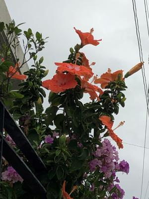
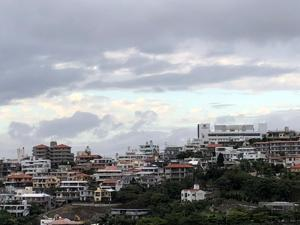
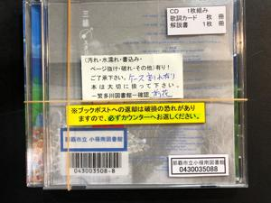

うるがいの話 ある日
最新: 手元がくるう【うるがいの話 ある日】とは 一日だけのプログです
『うるがいの話』の最新一日だけのプログで、通信料が少なく経済的だ。カニの画像をクリックすると全ての日付が載る『うるがいの話』サイトを表示します
|
|
【うるがいの話】 うるがい(ｳﾙｶﾞｲ urugai)とは、『もずくがに』の名前でとても大きくなります。 |
|---|---|
|
|
【Got cat カミマヤーの話】 たながー（ﾀﾅｶﾞｰtanagaa）とは手長えびのことで、何種類かあり大きいのは車 エビぐらいになります。 |

|
【ぶながぁの話】 ぶながー(bunagaa)とは、赤い髪の毛、赤い身体、そして身長は１ｍ２０ｃｍ ぐらい、川の蟹を食べているの目撃された。場所は沖縄県国頭郡大宜味村のと ある村僕の隣近所に住んでいる爺さんから、聞いた話です。 |
|
|
【ギーマの話】 ギーマ(giima)とは、山原の里山に咲くスズランに似た、 花を付けます。実は食べられます、 気が付くと口の周りが紫になっています。 |
2021年11月30日 (火）手元がくるう
16:33
 
市立図書館に予約した本を取りに行く、そしたら受付の人が手元がくるってＣ
Ｄを床に落としたのか、何か壊れる音がした。受付の人はてんぱってしまい、
事務室のところで責任者らしい人と話している。５分間、ジーとその混乱をみ
るのもアレなんで、そこいらにある本を見るふりをする。ＣＤケースが離れて
しまったようだ。私の目の前で、ケース割れ有りとシールをＣＤケースカバー
に貼り付ける。で、ケースが離れないように二つのゴムで補強する。おほほ、
そういう事か。通常は貸出期間は２週間だが、貸出票を家で確認するとＣＤだけ
は１週間しかも、延長できないようになったいた。

１６時２９分 ビットコインの総資産 ￥１８，５４１